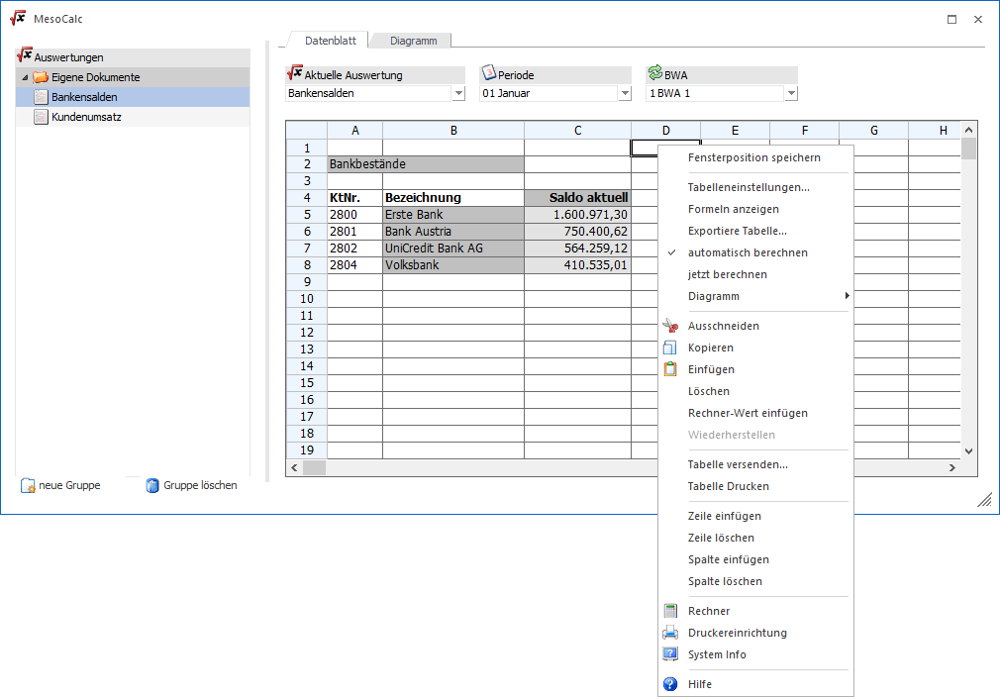
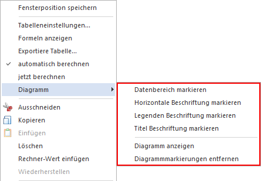
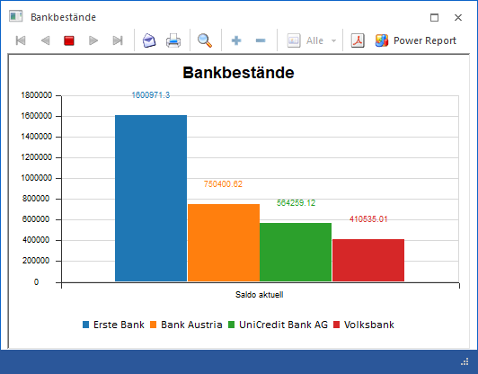

In einigen Menüpunkten (Bilanzausdruck, BAB, MesoCalc etc.) kann die Ausgabe in eine Tabelle erfolgen, wobei die Tabellenkalkulation geöffnet wird. In diesem Zusammenhang gibt es auch einige Programmfunktionen, die an der rechten Maustaste hängen.

Ø Tabelleneinstellungen…
Mit dieser Option können die Eigenschaften von Zellen verändert werden. Dabei können Einstellungen wie Schriftart, -größe, -farbe, die Hintergrundfarbe, die Zellenumrahmungen, die Ausrichtung und die Formatierung des Inhalts vorgenommen werden.
Ø Formel anzeigen
Wird diese Option aktiviert, werden in allen Zellen die Formeln angezeigt, die in den Zellen eingetragen wurden. Die Formeln werden so lange angezeigt, bis die Option wieder deaktiviert wird.
Ø Exportiere Tabelle…
Mit dieser Funktion kann die Tabelle als XLS-Datei abgespeichert werden. Dabei kann ein beliebiges Verzeichnis ausgewählt werden, der Name der XLS-Datei ist ebenfalls frei definierbar.
Ø automatisch berechnen
Diese Funktion wird vor allem im MesoCalc verwendet, wobei es sich bei dieser Funktion um eine Einstellung handelt. Standardmäßig ist die Option "automatisch berechnen" aktiviert, d.h. wenn eine Änderung in einer MesoCalc-Tabelle durchgeführt wird, wird das Ergebnis sofort neu berechnet. Wird diese Option deaktiviert, dann haben Änderungen nicht sofort eine Auswirkung, sondern erst dann, wenn die Funktion "jetzt berechnen" aufgerufen wird.
Ø jetzt berechnen
Mit dieser Funktion, die vor allem im MesoCalc Anwendung findet, kann das Kalkulationsblatt neu berechnet werden.
Ø Diagramm
Über die Funktion Diagramm kann ein Diagramm von einem frei definierbaren Datenbereich erstellt werden. Dabei stehen folgende Optionen zur Verfügung:

ü Datenbereich markieren
Diese
Option wird dann verwendet, wenn der Datenbereich, der Inhalt des Diagramms sein
soll, markiert wurde. Das ist auch die Basis für die Ausgabe von Diagrammen.
Wenn kein Datenbereich markiert wurde, dann wird auch kein Diagramm
angezeigt.
Hinweis
Im Diagramm können max. 10 Datenfelder angezeigt werden.
ü Horizontale Beschriftung
markieren
Mit dieser Option kann ein Feld aus der MesoCalc-Tabelle als
horizontale Beschriftung ausgewählt werden. Sinnvollerweise wird das die
Bezeichnung des Wertes sein, der Inhalt des Diagramms ist.
ü Legenden Beschriftung
markieren
Mit dieser Option wird der markierte Bereich als Beschriftung der
Legende verwendet. Im Normalfall wird dieses die Bezeichnung der Datenbereiche
sein. Auch hier können max. 10 Einträge angezeigt werden.
ü Titel Beschriftung
markieren
Mit dieser Option wird das aktive bzw. markierte Feld als
Überschrift des Diagramms verwendet.
Hinweis
Alle Datenfelder, die für ein Diagramm markiert wurden, werden mit unterschiedlichen Farben (Grautönen) eingefärbt. Ggf. vorgenommene farbliche Anpassungen werden überschrieben.
ü Diagramm anzeigen
Mit dieser
Option wird das Diagramm entsprechend der Einstellung erstellt und angezeigt.
Das Diagramm wird als Formular dargestellt und kann dementsprechend auch
behandelt werden. D.h. das Diagramm kann gedruckt oder via Mail versendet
werden.

ü Diagrammmarkierung
entfernen
Mit dieser Option werden alle Diagrammmarkierungen entfernt. Damit
werden dann auch alle farblichen Markierungen gelöscht. Vorher vorgenommen
farbliche Anpassung sind somit auch nicht mehr vorhanden.
Ø Tabelle versenden…
Wenn am Arbeitsplatz ein Mail-Client installiert ist, dann kann mit dieser Option die Tabelle als Datei MAILEXCEL.XLS versendet werden. Nach Anwahl dieser Option wird eine neue Mailnachricht geöffnet, in der gleich die Tabelle als Anlage beigefügt wird.
Ø Tabelle Drucken
Mit dieser Option kann die gesamte Tabelle ausgedruckt werden.
Ø Zeile einfügen
Mit dieser Option kann eine neue Zeile eingefügt werden. Die neue Zeile wird oberhalb der aktuellen Position eingefügt.
Ø Zeile löschen
Mit dieser Option wir die aktuelle Zeile gelöscht.
Ø Spalte einfügen
Mit dieser Option kann eine neue Spalte (über alle Zeilen) eingefügt werden. Die aktuelle Spalte wird nach rechts verschoben.
Ø Spalte löschen
Mit dieser Option kann die aktuelle Spalte gelöscht werden.